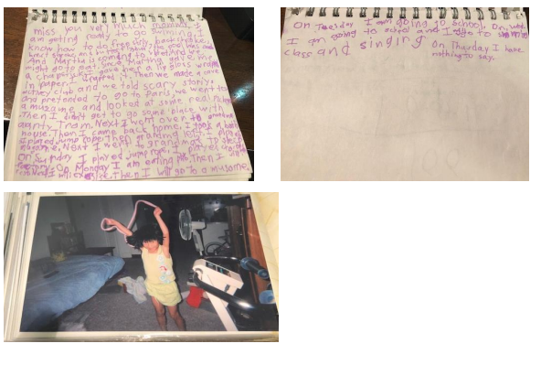

In fall 2018 i took a class on writing memoir, where i thought about memory, adolescence, and the relationships that daughters and mothers can grow to share.
My hippocampus in a jar of acid
Abstract: The hippocampus is a small organ located in the brain’s medial temporal lobe and forms an important part of the limbic system, the region that regulates emotions. It is associated mainly with memory, in particular long-term memory. The organ also plays an important role in spatial navigation with learning and storing information referring to portions of space, in the form of cognitive maps.1
I never learned how to drive. Even in a parking lot, the straight white lines on pavement mocked me as I smoothed over them at offset angles. It was insulting for my grandpa, Italian and tempered and Craigslist-buying, when I dented the front of his red hot Chevy moving at eight miles per hour in the lot. My third driving lesson would be my last and all the Massholes on the interstate sighed in unison.
The failure felt devilishly in line; I knew then that I couldn’t drive straight, or swim, run, and bike straight. I veer to the right and gutter at (candlepin) bowling. Dismounting a bike or locking into gait are second nature for others, when for me it’s something like surrender to the dizzying unbalance that comes with the fear of heights and peering down an edge.
My mom does not drive, swim, run, or bike. She is also left-handed and left-bodied, has a fear of heights, and experiences some serious bouts of vertigo. I suspect with all the rest I inherited my iron deficiency and tendency to overtire from her, recalling the alarming number of times my vision has cut out during a cross country race, aboard a vehicle in motion, or simply in standing up. Once, I took a shower on a usually empty stomach only to slip into the void upon soaking my hair. “Mom! Am I going blind?” She carried me naked out of the bathtub while I tried to find, second, my eyes as an afterthought to consciousness. Then laughed with me. Her derivative her only child. We have always been frail patients falling off doctors’ charts, drinking down remedial Boost, Ensure, pills as if all that would restore the strength we expend too fast. My friend Clare, who last October caught me in her arms nauseated and lilting on the London Tube, couldn’t shake the image of my cracked skull splitting to pieces if she had faltered. Terrified us both on a charming Sunday morning docked for photographing sheep, but my mom was not surprised by any measure as I retold the story. Mom guessed right, I didn’t get enough sleep and nixed breakfast in Londontown. She too passed out once in school after skipping morning cereal.
Once refuged in America my mom grows up, spurs up like a twisted root and falls down three flights of stairs, does both pained and impacted; her short-term memory disfigures, not too seriously. Clumsy (strong, resilient) frame, clumsy (strong, resilient) mind.
She shows me the chaos of life uncalibrated. Disoriented. Of stripping the compass, all dimensional representation piece by piece of its crude divisions: the left-right-up-down ? happy-sad-calm-anxious ? time-space-forwards-backwards body mind pain strength of visceral experience safely confined in four quadrants.
Semicircular canal. 8 yrs, 33 yrs
One October weekend, mom enlists Lauren to go whale watching with us. Lauren is about halfway between mom and me in age, in her impulsive twenties where she will leave for Berlin tomorrow if plane tickets drop dangerously low. Lauren says yes. Driver? Check.
It’s stormy weather up in Salem, Massachusetts, a melancholic, sinking town with two hot spots for tourism: a harbor and a witchcraft museum. The waves are angry as they roll over, tonic seltzer sloshing below the brooding sky. I love this. I love fun, I love mayhem. We are running late and haven’t eaten. Pulling into a pizza joint, we order a large cheese to split among three then We gotta split! These are wasted tickets if we don’t get a good spot! And we do, we’re rash, making remarkable time. The ship bobs, still tethered to the dock as we make our way up to the open deck with the few seats already taken; we mark our domain by way of pizza box, crouching to its level on the floor, hovering cautiously to (1) keep balance and (2) block our cheap grease fix from sliding away. I scope my grounded view of kneecaps in baggy jeans and flyaway napkins.
Just when it’s too late to turn around, the rocking snaps to rhythmic grid. Mania rouses on the top deck, trickles down the stairs rages through the cabin galley back deck then springs off the rudder like a diving board, but not before creeping into the inner ear of every poor soul on North Shore waters. The boat is really, really rocky.
People are throwing up over the railing. Mom and Lauren disappear for eternity.
It is not the first time I become terrified, but I am more terrified than I have ever been. Both of the adults in charge are out for the count; I can’t isolate the plunging in my stomach. Later I can’t find the word I’m looking for in the dictionary at school. It’s emetophobia, irrational fear of vomit.
I sit on a metal bench in open air, one meant for spectating, eyes closed, arms crossed. Bothered by strangers offering saltines or their advice to get up and walking, or kindly asking, “where are your parents?” I mimic response like a shadow of my body. I am outside of my body. Dunked underwater. Forced underwater into an ocean of diffusing vomit. I am the rocking boat the masts my arms am strung here tipping over sinking, sinking, sweating underneath coat, blur glaze over eyes chunks floating by on retina.
“Having fun? Looks like you’re holding up!”
Mom checks in on me after a few hours or so, who knows on a queasy mariner’s time, minimally recovered from her stay in the lower deck cabin-turned-sick ward. Lauren yells over to us, pointing frantically,
“Beluga! Eight-o-clock!”
She whips out her Canon, snaps the memory, and then there’s the cheese pizza again, spraying down into the ocean and as she ejects a stranger holds the camera. Mom says “gross!” and laughs. I shudder, the terrible fear folding inward into my core. But Mom is eagerly scanning between six and noon. It seems this is the game of adventure, where among horror and ugliness you might just discover a searing brilliance.
One unbelievable beluga whale.
Arms as wings. 3 – 10yrs, 28 – 35yrs
Mom’s heart caught fire in a beautiful and frightening way, a way I’d always hoped mine could. She introduced me to her young male friends, many of whom were once (I bet) or later became boyfriends, simply a ‘MBF’ (mom’s boyfriend) for short. Together Mom and I travelled to every corner of the earth. We begged strangers to exchange seats while airlining over the Atlantic, queued kisses to undersea internet cables to appear over Skype on the other side of the War, and above all, exalted patience to ease the vertigo of love gained and lost again. Together we wrote the myth of the impossible long distance relationship and lived its impact on the body and soul.
From oval windows I burned canopies of clouds into the back of my eyelids; a toddler, I learned to walk in wavering lines down plane aisles. Soon Mom and I would land in Sacramento International Airport. I’d come down to reality. In the safe arms of a MBF (or ESF in special case for not yet ex step father), I’d find home far away from Medford, Massachusetts.
MBF tells me stories of California fried pigeon, how we will catch a pigeon on the street and kill it for dinner tonight. Empty promises are made involving Build-A-Bear and going behind Mom’s back in escapade. Then we don’t eat pigeon. Instead I’m allowed to eat my way through icecream cones, never knowing I am complicit in the rite of men fixing to do everything illegal in a child’s mind, all to win over the daughter of their girlfriend. I cry when he cheats, away for the War.
We leave Sacramento behind, blind to the naked eye through that aircraft oval window. MBF is at one moment just beyond my field of view and in the next, calibrating his own in Iraq. How do I console the look on Mom’s face when I don’t fully understand the stake? I only mime the thrill of travel, of chasing love, of putting your body and mind, sacrifice and trust on a thinning line, through a second-hand feeling—not in words that let the ache seep out.
I learn the names of places the ache brings us before and after like Sacramento Paris Baghdad Des Moines Salt Lake Frankfurt Saigon Hartford. In fourth grade geography and strangers in transit are my favorite subjects to study. In fourth grade I tell you that if you try hard enough, if you bend your body to the shape of water and will—to the curve of the earth—it will take you to wherever and whoever you want to go. Simply save up and board a plane to find home. Cry yourself rigid when you must leave what you’ve found and pray muscle memory forgets.
Where is home? I hold Mom’s hand and sense it’s in the people inside places inside memories. We step into the jetbridge again and it mixes up my keep of time (equals the amount of space from where you were), space (the amount of time to get somewhere), forgiving and suppressing as a singular ricochet.
Hippocampus, overactive. 8 – 10yrs, 33 – 35 yrs
Everyone else loses memories easily. So I keep them close.2 Every night I cry because I do not have proof of concept for what is worth remembering— when things disappear or here plays tricks on there so much so remembering is all that I have. I cry because I cannot separate the sad from the happy and calm and anxious. When remembered, even small and joyful moments numb me. The little book fair shelves of Geronimo Stilton look it’s our book! James points, the park and Mom pushing the tire swing all silly, rinsing dishes with (splashing water on) Aunty Tram before she moved to ‘Ithaca.’ And the bad feelings— crying, blankness—sedate just the same. At first, Mom is worried. Then it builds to irritation she tries to hide, burdened by her blue child’s slanted axis of perception.
Mind’s eye. 13 yrs, 38 yrs
We have been coming to New York every few months for some years.3 We take the Lucky Star or Fung Wah bus from Boston because we know the fare is $10 and the driving is reckless (we get there fast). I like staring blankly out the window onto highway pavement before Yonkers. After grad school at Cornell, Aunty Tram trades in her cockroach-infested flat in Queens for a modern deco apartment on the forty-second floor off Wall Street.
Aunty Tram is a well-to-do, a lioness in business formal. Mom balances night school— enrolls in painting, ecology, whatever it takes to get an associate’s degree these days—and a comfortably tedious job drawing colored lines on x-rays. The sisters once lived under the same roof, but that’s caved from the fights, the pressure of differences. I love them both.4
Who do I want to be? I am already the summation of others of those that I miss but I could be something else.
Narrowed, intensifying: a woman who hits the gas, Masshole swerving in Manhattan gridlock, swallows the dice.
Harmonizing, wishful: a woman who saves the fortune in the cookie, rolls with the punches, hopes for the best.
Aunty Tram yanks out my earbuds as we walk from the subway stop to the restaurant.
“Why do you let her do this? She doesn’t know how to talk to people. Don’t you teach her to pay attention sometimes, get her out of her own world?” Aunty Tram baits, not addressing me for I do not enjoy this kind of conversation, not yet with a kid of her own.
“She can do what she wants,” is Mom’s steady answer.
Inside we fine dine on daintily devilled eggs, mac and cheese with buttery crumbs, a dessert of banana foster. Four spoons please. We’re at some Yelp suggestion with low lighting where your eyes tune halfway to night vision, on the West Side. I’m pretty sure the ivied New Yorkers at the table, Aunty Tram and Uncle Greg, are paying. The sisters catch up, “what do you hate about me now?” contrasted by grins and bright chatter in half Viet half English—
“So have you thought more about what you might be interested in? Have you looked into economics?” Aunty Tram pushes, addressing me.
I found out about the middle sister either a few months before or after. The living room was a library, a new shipment of books stacked on the carpet floor in no deliberate arrangement. My mom never read anymore, but there must have been at least twenty copies of the same title sprawled across our tiny apartment. Each spine plastered with Halfway Heaven: Diary of a Harvard Murder.
Naturally, I read half this book for my eighth grade self-selected reading before the thirteen year-old closed it shut, words blurring on the page. My mom’s sister didn’t get cancer. No, she was the first listed victim in a high-profile murder-suicide at Harvard, as the author Melanie Thornstorm reports, the case dating to 1995 and claiming its resonance by headlining Harvard’s institutional failure to address the mental health needs of the its student body. Though that’s for the newspaper, shiny back slip of the hardcover.
Tufts lost one senior. Mom took to family, anti-depressants, to drop out at twenty-one in sacrifice, to care for her mother shrieking at night. Uses her halted English education to translate divorce papers and perceive her father’s abuse as uncultured. On the bus to the job her child sleeps in full arms but she can’t give her enough. Aunty Tram stayed at school. She’s motivated by severity, choosing success: self-made from Tufts to Manhattan to Cornell to the top of the ladder. No kid, will wait until thirty- four. Gorgeous rustic wedding. She has choices.
I have not read economics since the last visit and immediately regret my faltering, “I don’t know, maybe music.. I might want to go to.. um, Berklee.. have you heard of it—”
I love them both but it’s time to choose. I wish to radiate brilliance. A robin painted on metro skyline, set free in rapture from the chasm of loss.
Esophagus. 15 yrs, 40 yrs
In tenth grade, I meet expectations. I am at the top of my class, boast the fifth-best rank in cross country, play in marching and concert and jazz band, volunteer and tutor, mural and write press in art club. My friends adore me, I gift them intricate handmade birthday cards and photo albums. From the entirety of the Class of 2015 I ask for a ride home and people say “sure, Kha, anything for you, you’re a cool cat, sucks your mom doesn’t drive though!” Though I have not narrowed—versatility being my key strength5—I have intensified my efforts toward academic pursuit. Please the teachers. I work hard to impress a math-loving goofball. A hard ass. A too young too blonde to be an Italian teacher. A man of cool collection phrasing ‘sex is like eating lunch’ and ‘in English you learn about capitalism’ hunching in front of Klimt’s Tree of Life, all in the same school day.
I could try harder still. A few nights a week I beg grandma or grandpa to drive me to Clare’s house so we can study together. Clare is more attuned to European history, the humanities, whereas I’m spread thin so I ask her to explain inflation. Somehow she convinces me to huddle around her mom’s Windows XP desktop and watch the one- hundred episode YouTube adaptation of Pride and Prejudice—not as replacement for reading but as supplement—which will do more to relax me than chemistry does (okay, I’m down). When in fourth period the atomic diagrams morph to doodled wasteland, Clare’s mom drives us to Tufts to get tutored; yes, let’s show this hardass who writes the test impossible. Impossible! A pot of family recipe corn chowder often awaits once we’re back at Clare’s. One particularly late evening, I think to myself,
Corn chowder is the easiest thing to push down and hold still.
Clare is my childhood friend and our moms have always had things in common.
My mom and I shared a therapist. I’d been seeing the reliable stranger for awhile and allowed her my vulnerability, a fuller slice than I’d save anyone else—patient confidentiality prevents my mom from finding out anything I say. Yet even to my stranger, I could not admit.
Clare finds it harder to leave bed so I offer to sleep over through the weeks—our moms think this is a pleasant idea.
I answer all the critical assessments with ‘no.’ I do not think I am worthless, nor do I wish to hurt myself or disappear. It’s just the normal the high school stress, I swear.
Then one day Clare refuses to go to school, despite my coaxing, pleading. “Please, I hate it too, maybe we can still go together.”
Through periods one to six I can’t help sometimes but get so nervous I turn to pure Evil, Evil that is: That bathroom. Not for weed. Head down hairs tucked. Not sex. Quick easy sooner it starts sooner its over you want it to be over? Not piercing my belly button.
But she’s buried, layers deep, under the seeming latency of polyester duvet she’s vacant and Evil is aiming the fucking spew, the mutilation, wretching out faintly bile nearly water chowder stew and once flushed away, is false salvation in the lavatory of A and C building until
she’s admitted to the psych ward, until she drops out of Medford High, until she boards an island-bound ferry to move far away.
“Let’s talk about time management. I want you to write ‘prioritization’ at the top of your agenda every day.” My body says no I’m tired please quit school. My mind says yes. This is just how it goes. I make a list of my activities and daily time allotted for each as to not become overwhelmed.
Visiting Clare at McLean is a Saturday afternoon event. I make note in my Medford Mustang agenda with purple marker highlighted over by yellow as to ‘compartmentalize.’ My mom feels badly for Clare, but she tells me she’s glad it’s not me. I don’t know how to feel about that.
Clare’s room is about thirty minutes in some direction from Medford. Her room is a grey box inside a larger grey box labelled ‘good psychiatric hospital,’ exactly as I imagined, and before they allow me there I am searched for sharp objects. Mostly everything that happens is exactly as I imagine, because Girl, Interrupted is about McLean and I finished every book on the tenth grade summer reading list those odd, distant months earlier.
What I do not predict is the acrylic paints, her careful strokes on pages on the floor. Yes, art is physical—a command of representations from brain to hand to brush—at awe from the simplicity of color dashes and flickers on grey, grey, grey. We’re in Clare’s ‘art room’ which is another box down the hall from her sleeping room.
Some visits later Clare is dedicated and takes her mom’s rusty van for a swing around McLean’s parking lot for driving practice. Her mom says, “Isn’t she a natural?” and we all agree. Rattling down the sloping hills, I’m impressed by her precision and control—we’re meandering an abnormal lot with twists and terrain. She’s giddy, I’m giddy. It’s a drive.
Before Clare moves to the island with the one-room schoolhouse, my mom and her boyfriend buy something to make us feel like a family and make me feel loved; she thinks I’m blue because of something she did; deep down so little of that is true. It’s a bike with no kickstand. Why no stand? Because they’re screwed in on the wrong side for a lefty like you. I’m not interested in driving yet so this is really cool—wow, thank you! We walk to a park with a baseball field. I start pedaling then falter for I can’t ride a bike, the weight of the metal frame crushing my legs. Get off the grass! But I’m scared, what if I fall? Come on, it’s easier on the dirt! So, I pedal along the edges of the baseball rhombus diamond thing, still partly on grass for like half an hour then veer off like hey hey I’m going, I’m goooinngggg! Fifteen and swerving all over the diamond—never quite learn how to steer— but I can ride a bike. The school year is ending.
Cotton mouth. 18 yrs, 43 yrs
The summer after freshman year at Carleton, James and Matt assess my choppy loops around Matt’s driveaway and into the street. I always do a test run before bike rides, as if three minutes of calibrating will change the fact of who I am. “Okay, I think I’m ready to go” is the signal. James goes to Salem State studying geography and Matt goes to Rhode Island School of Design—they ran the art club together at Medford High—and play Pokemon Go, no handlebars, while cruising down busy suburban roads that merge to highway routes. They are so freaking spatial. All my trust lies in two best friends to bring me home alive. “You’re great at keeping in touch with people,” my mom is surprised I retain friends from high school, third grade. Well, it’s easy, you just meet them where they’re at, by bus plane train; space and time use the other as vehicle. “Okay, honey, but don’t wear yourself out.” James, Matt, then I enter a cemetery on an asphalt path. I’m too cocky. For a split second I let go of concentration, no obstacles in sight just wide pavement lined by two tombstoned horizons. I’m too cocky. James plucks a big ol’ sassafras leaf, draws a smiley on it with black sharpie, to absorb my bright red blood of a knee. He knows if I look at it too long I might register I’m in pain; pass out. Inhaling fumes of lavender candle and alcohol… Matt’s purple bathroom. They tend to me with cotton rounds and beeswax color packets of Neosporin from the first-aid kit. They say “count to twenty and bite down hard!” on the cotton between my teeth, while they spread goo over my leg. Sparks in my joints, my bones. Seething. Settling. Now, I don’t get that bizarre elated high—with all else that mutation of strength as pain’s reward. I just heal in the company of old friends.
Heart. 19 – 20 yrs, 44 – 45 yrs
At Carleton I am stronger than I ever was. For $50, I buy a rusty red bike with its chains all tangled. With duty rope my friend Keaton ties a trailing cord to his bike, which works better than mine, so on our skateboard, cord in hand, I learn to push off with my right foot and when we switch, I learn to pedal the weight of one bike, one skateboard, two humans, and a pile of rope. Keaton and James know they are parallel because I constantly tell both of the other. My first year I don’t purge; I don’t break.
The new energy, plunging me into my sophomore year, compels a tough job mentoring freshmen, LIFG for low-income first-generation. This term, I learn, often shadows broken families, low self-esteem, histories of depression. “Because my dad left me,” Joe says sarcastically, excusing any commitment where he’s too lazy to show up. Dammit Joe, wake your ass up and go to class! But I forgive no matter how many times he pulls the line. They come to me, the fringe tables at the back of the dining hall, failing classes, head down past the wellness center and dreaming of Houston or wherever Carleton recruits their diversity to play the game of survival in chilling misery. I was a mentee just the year before.
At nineteen my past is too close to do the job well. During staff meeting we brainstorm ways to reduce the freshman internalization: how we owe whoever raised us, if not our lives then at the very least a transcript full of As and a ‘practical’ degree. I say, “you don’t owe them.” A hypocrite, I major in American Studies and Computer Science because it is halfway practical. Guilty hypocrite. As coworkers brainstorm my mind wanders. Mom. Six days a week my she’s alongside MBF, hauling tile and buckets of grout, breaking her bones for her children, two now, stronger than I will ever be. “You don’t owe them.” My brother. No money for kindergarten. How it must be a privilege to be at a good school at all, even if class is invisible and I am invisible. How it must be a privilege to mirror old triggers—my neurons fire to jerk away from the bathroom stall and, instead, in compulsion run water through my hands—because when I turned eighteen my father put in another court order. My mom was furious. I was estranged. One year of child support was contingent upon good academic standing, a 3.0 GPA and—oh, right, yes, we are brainstorming. Yes a bike raffle is a great idea. Come Thanksgiving, we raffle off used bikes to the freshmen. Together we pedal away from every paradox of expectation.
The first time I can’t handle the brownie Keaton calls James then walks me, hand in trembling hand, back to my bedroom where hidden memories burst like fireworks off my pitch black walls. The seventh and eighth I am unhinged through finals. Some mentees heal on cannabis so I meet one on porch-lit steps to split a joint, hear out his truth, apply a staff strategy, but really to muddle my compass as we relieve the suffocation of this place. I report my hours for pay.
It’s not my fault when inevitable is news of transfer and drop out, is losing a chunk of the program and freshman class. Not everyone can heal. Guilty.
My first two years when the town shops close at eight, the students retreat to their buildings and the silence stifles me to sleep, isolation is my familiarity. There is nothing beyond the horizon.
Carleton is not an easy love. My heart freezes when it snows, so still, in October.
In Budapest, the people stay out intoxicated until six or seven a.m. I know because every night except Sundays, I either idle or add to the debauchery, because on a map, my postcode shapes into the heart of downtown and all my abroad classes are pass/fail. Above a row of eateries and bars you should look up and hear where I live.
For four months of my junior fall I go there to come home. I sing and smile to myself like my mom says I do when I’m feeling good and unafraid. I come home late, dead phone, often by myself and in wander. My mom would not approve though she trusts me. But before I collapse onto my rock-hard bed: someone buys me a little plastic shot of Grey Goose at Szimpla… first, a friend of friend barters 40 USD for weed, shit—oregano, on the corner…first…a couple blocks down, or maybe more, I’m fretting at the mini-mart among the two-dollar wines to offer at my neighbor’s weekly soiree. Or should I just grab a gyro and call it a night? After time still I come home, in one piece and in humanity.
Of course, during the day, I absorb computer vision, theoretical limits of computation, and DNA sequencing techniques to finish all my homework.
At night he is still the only person I’ve kissed sober, and I guess not blackout; the easiest love I’ve ever had. No nausea to offset so I brush against precisely where I want to.
On the first date, though, my legs want to sleep after a long and aimless stroll in Pest, so at the busy corner of Rákóczi and Puskin I stumble backwards when our lips meet, finally, after four clumsy hours. Traffic lights flood the street. I don’t drive so I don’t know the shortcuts of when it’s okay to cross on green, only red. The goodbye is past extended but I’m glued at the corner. Travers pulls me in twice, I stumble backwards.
He can talk a storm about his mom and Vermont and gap years and being the only kid to go to college from his high school. It’s one of those storms, the incessant kind, where the sky darkens, downpours, lifts, and lightens in cycle, but so erratically you trouble over where the rain went until it pours again in sheets minutes later. Sometimes in the spaces between his words I wait, in the dark, for his anxiety to subside to ADHD. And he’s too patient with me, also, every time my bare thighs start shaking and I can’t talk about it but I’m certain he knows, asks are you sure? Yes.
The first date is the last time we are both healthy. Later, sitting on the edge of his bed which are two fulls pushed together, preemptive I swig down Emergen-C as he stares, gentle and fevered, a few rosy crystals fall astray on white crumpled sheet. I will be twenty in the morning. After a few nights, weeks over we start to wonder who’s getting who sick. We admit to indifference if two immune systems can fend the contagion of attraction.
Around my apartment I leave teacups scattered and sipped halfway down of rosy powder dissolved to liquid. White blood cells flicker down for the season.
In the pit of the year, Budapest offers more love than I know how to accept. Outside fall edges to winter, ever so slowly, so the snow won’t stick in December and I can stay happy. Mulled wine, markets, embroidery, laughter. Friendships born in cozy teahouses. Bumpy tram rides and well-lit faces. For the school’s holiday potluck, my friends Jonathan and Michael agree to baking peppermint bark.
You’d think in a near unanimous Catholic country they’d sell candy canes during Christmastime. They don’t. In Auchan—their Walmart—the three of us pace up and down the aisles for over an hour. Only Michael is taking the language class which means he’s the one (use your Hungarian, Michael!) to greet five different employees with the Google Translate page for ‘candy cane’ on his phone. We leave defeated, misled to tubes of peppermint extract, breath mints, potted plants with mint leaves. Back in the apartment, my flatmate Karina watches in mirth as we grind up these powder-white Altoid balls for ‘decoration and flavor.’ The grounds are a fat line of cocaine on the countertop spilling to the floor. Sprinklin’. I can’t help causing chaos but Karina is so used to me by now. I am carried by the warmth of my friends. The lower latitude, the busy city. The next day Travers and I fly to Galway to visit Clare. Frost plagues my body. My heart is alive.
I try hard to remember that feeling when I need it. At the same time I try to forget. Back in the States, I’m starting to muddle again. Except for three during one summer, my abroad friends are in all different cities. Keaton, the college best friend, is walking the stage with cap and gown, a year early. Jonathan and Karina won’t look each other in the eye, dividing our apartment. My grandpa leaves voicemails saying call him back before he dies. Travers green-lights the visit, Vassar in New York, but he doesn’t say I’ll meet his surprise girlfriend and watch him put on that tux and not cry in front of everyone over and over; instead he sees right through me. Everything that’s real, evidently, is evasive. Concussion, three flights of stairs. I keep wishing for concussion. My skull splitting to pieces on the floor. Or my hippocampus floating in a jar of acid, to expunge the need for reconciliation. My heart and veins as a dead twisted root. I like the picture of it. But I know, I know, I know I do not truly crave to neglect physicality.
In the summer before twenty-one, I sublet in Harvard Square with Jonathan, Karina, and Yina, all friends from abroad. They are all of age. I type in my father’s address, which I found on Whitepages, for my fake Connecticut driver’s license that’s never delivered. On Google Street View I rotate the mansion. In the summer, I can almost drive.
The summer I can’t go to bars I instead spend recalling strength in my heartbeat. A Monday in June, I’m trudging up the hills of Boston Common in heeled sandals, backpack empty save the Band-Aids, ibuprofen, tabs, cankersore relief cream, notebook, and a couple other loose ends. An adolescence of unplanned days with James and Matt has taught me the essentials of adventure. I spot them in the Common. Ibuprofen comes in handy at the public library we make an afternoon event, my head and heart pounding after wandering the summer heat to arrive there—I check out a book on brain injury and memory loss. Later, I buy one on acid trip chemistry. July sticks like paste. Once my headphones go missing, I play sad music out loud (at one bar of volume) on the way to work and I swear the soundwaves break up humidity, beat to stride. Flies swarm the trash can, so Jonathan and I bike twenty miles to escape our un-air conditioned apartment. Ache in my bones feels good, especially when the evening cools off, like I’m nine again and my mom is walking me home from the park at sunset.
I remember when we used to walk to Morrison Park, just the two of us. Back in Medford in our flat along the highway—the time of whale watches and War—we’d wait until there were absolutely no cars in sight to cross Rt. 28 toward Morrison. We were both lonely. Suddenly I remember that time, my odd fascination with sad books, sad songs, sad lonely stuffed animal worlds and how you brought me outside them with “let’s go to the park.” As I swung on monkey bars, palms blistering, you praised with creeping smile. You a single parent, me an only child.
August. In Olivia Liang’s The Lonely City I trace ‘being sad is not a crime.’ I decide my strength will be self-love. In my head I recall the skipped classes, daydrinking, long lonely walks, slipping 3.0, insecurity of the tongue-bit winter and spring. I’ve been losing touch. At home three days before flying out for senior year all I say is I don’t want to double major anymore, because “it’s been too much,” and because I want to “for once take a class for fun,” (music production, astronomy, and memoir). Luckily for you and me, you can always read in between my slanted lines. It’s okay.
September. Earbuds in, South Station. Cambridge. Davis Square. Wellington Station. Cape Cod. Harvard Square. Medford. Logan Airport. Love contemplates me.
At the airport, I don’t say I love you back. For ten years now I don’t even say I love you because I fear if I do, I will lose you too. So I meet your hugs with silence hoping, soon, I answer myself; answer you.
Despite this, you reach for me. Mom.
My deepest fear, I think, past forgetting the reality of my body |living in my head forever| is losing her to that exactly. In search of center, I’ve boarded 49 planes6 from nineteen to twenty-one. I don’t know when time and space will be enough to lift me from my memory. Worrying she won’t forgive me. Still, even still when I don’t come home, she reaches with tender arms. Everything inside is overactive, quixotic yet she will love my compass: all its representation, before I begin to forgive, then love, myself.
Sometimes, love is enough to absorb the seeping hippocampal acid.
Sometimes, love is enough to absolve the seeping acid.7
Citations
O’Keefe, J., & Dostrovsky, J. (1971). “The hippocampus as a spatial map: Preliminary evidence from unit activity in the freely-moving rat.” Brain Research, 34:1, 171-175. Nadel, L. (1991). “The hippocampus and space revisited.” Hippocampus, 1:3, 221-229. ↩︎
High-detail journaling and jump roping. (2006).

↩︎